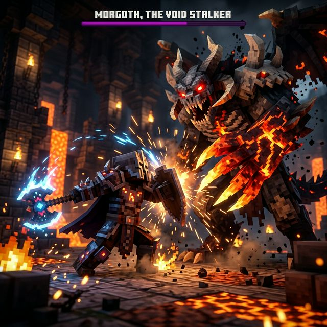
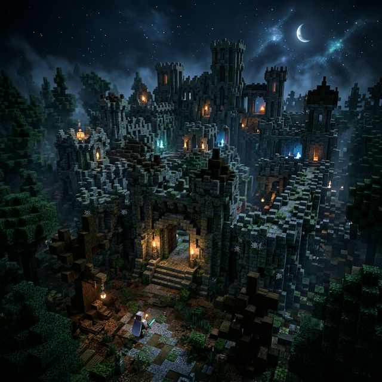
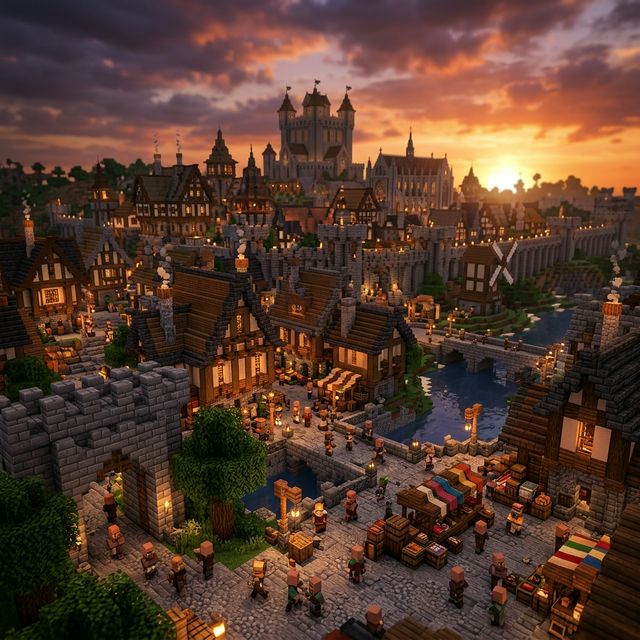

Chronicles of the Fallen Realm
Forja tu leyenda en un mundo destrozado por magia oscura. Explora ruinas antiguas, derrota bestias colosales y reclama tu imperio.
Forja tu leyenda en un mundo destrozado por magia oscura. Explora ruinas antiguas, derrota bestias colosales y reclama tu imperio.
"En un mundo fragmentado por la magia antigua, los reinos han caído bajo la sombra. Tu misión no es solo sobrevivir, sino reconstruir, explorar mazmorras olvidadas y dominar las artes de la guerra, la tecnología antigua y la magia elemental."

Sistema táctico basado en stamina, con animaciones fluidas de esquives, bloqueos direccionales y ataques críticos demoledores que penalizan el mínimo error. Prepárate para morir.

Generación procedural infinita con biomas místicos y ruinas milenarias plagadas de trampas, acertijos y tesoros fuertemente custodiados por bestias impías.

Funda tu colonia desde los cimientos. Recluta habitantes inteligentes, asígnales trabajos, diseña murallas y repele asedios de la noche infinita.
.zip de la última Release del proyecto.
Atención: Recuerda revisar los mods manuales para descargar aquellos que pesan más de 100MB por sus licencias.